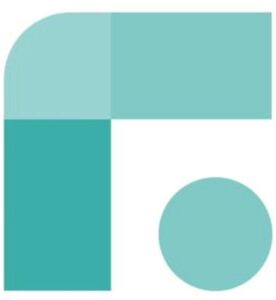

Trade Mark Journal No.2025/042 17 October 2025
WO0000001877715 (7,9,21,36,37,39,40,42)
Office of origin: Norway
Date of International Registration:3 July 2025
Date of designation in the UK:
3 July 2025

- Class 7
- Reverse vending machines; recycling machines used to collect goods for recycling and reuse; machines for transporting cups, bottles, glasses, bowls and other containers, crates, plates and cutlery, used for food and beverages returned for reuse and recycling; machines for receiving, cleaning, and storing of cups, bottles, glasses, bowls and other containers, crates, plates and cutlery, used for food and beverages, returned for reuse and recycling; crushing, flattening, fractionating, granulating and sorting machines for cups, bottles, glasses, bowls and other containers, crates, plates and cutlery, used for food and beverages; automatic reverse vending reward machines; reward or deposit reverse vending machines; return machines, namely, automated machines for accepting and identifying the material properties and deposit or other reward value of empty rigid or semi-rigid containers for recycling and reuse of non-reward or non-refund cups, bottles, glasses, bowls and other containers, crates, plates and cutlery, used for food and beverages; return machines, namely, automated machines for accepting and identifying the material properties and deposit or other reward value of empty rigid or semi-rigid containers for recycling and reuse of rewardable or refundable cups, bottles, glasses, bowls and other containers, crates, plates and cutlery, used for food and beverages.
- Class 9
- Computer software, application computer software and software platforms for services relating to recycling or reuse of cans, bottles and other products and materials; data processing and analysis software for reverse vending machines; computer software, application computer software and software platforms for operating, managing, monitoring, controlling and planning maintenance for reverse vending machines; computer software, application computer software and software platforms for remote monitoring of reverse vending installations for remote analysis and control functions for deposit refund transactions and remote maintenance functions; computer software, application computer software and software platforms for collecting, analyzing, processing and reporting information and statistics regarding reverse vending machines and usage of reverse vending machines; computer software, application computer software and software platforms for information, communication and administration of loyalty, incentive, reward and bonus programs relating to recycling or reuse of cans, bottles and other products and materials; computer software, application computer software and software platforms for information, collection, depositing, transportation, education, interaction, transactions, communication and logistics regarding recycling and reuse of cans, bottles and other products and materials; computer software, application computer software and software platforms for provision of information, peer-to-peer interaction and transactions, and the booking or provision of transportation services in the fields of collection and transportation of cans, bottles and other products and materials for reuse and recycling; computer software, application computer software and software platforms for coordinating transportation services and for obtaining and booking transportation, freight and delivery services for recycling and reuse of cans, bottles and other products and materials; apparatus for automatic identification and recognition of cups, bottles, glasses, bowls and other containers, crates, plates and cutlery, used for food and beverages.
- Class 21
- Cups, bottles, glasses, bowls and other containers and plates, used for food and beverages.
- Class 36
- Financial transaction services in relation to purchase, use and return of cups, bottles, glasses, bowls and other containers, crates, plates and cutlery, used for food and beverages; issuing of tokens of value in relation to loyalty, incentive, reward and bonus programs; issuing tokens and other bearers of value as a reward for customer loyalty; economic and financial information on recycling and reuse of goods and materials and sustainable development and environmental awareness.
- Class 37
- Installation, repair and maintenance of reverse vending machines; washing and cleaning services; washing and cleaning of cups, bottles, glasses, bowls and other containers, crates, plates and cutlery, used for food and beverages, for the purpose of reuse.
- Class 39
- Collection and distribution services; collection and distribution services of cups, bottles, glasses, bowls and other containers, crates, plates and cutlery, used for food and beverages, for the purpose of reuse; transportation and transportation logistics services; transportation and transportation logistics services of cups, bottles, glasses, bowls and other containers, crates, plates and cutlery, used for food and beverages, for the purpose of reuse; waste collection; electronic tracking of cargo and of transportation vehicles for logistics purposes; computerized planning of transportation.
- Class 40
- Recycling and reuse services; reuse and recycling of cups, bottles, glasses, bowls and other containers, crates, plates and cutlery, used for food and beverages; treatment and transformation, namely, compaction, flattening, shredding, chipping, granulating, flaking and baling, of cups, bottles, glasses, bowls and other containers, crates, plates and cutlery, used for food and beverages; automated sorting of goods and materials; automated sorting of cups, bottles, glasses, bowls and other containers, crates, plates and cutlery, used for food and beverages, for recycling and reuse purposes; provision of user information for the purpose of recycling and reuse of cups, bottles, glasses, bowls and other containers, crates, plates and cutlery, used for food and beverages.
- Class 42
- Providing temporary use of online software for accessing a cloud computing network, providing temporary use of non-downloadable, web-based, and cloud-based software; software as a service (SAAS) services; platform as a service (PAAS) services; providing an online non downloadable, web-based and cloud-based software platform; all for facilitation of provision of services of information, information on loyalty, incentive, reward and bonus programs, organization, peer-to-peer interaction and transactions, booking services, coordination, collection, depositing, freight, cargo navigation, delivery, transportation, education, interaction, transactions, communication, logistics for the purpose of recycling or reuse of cups, bottles, glasses, bowls and other containers, crates, plates and cutlery, used for food and beverages; providing temporary use of online software for accessing a cloud computing network, providing temporary use of non-downloadable, web-based, and cloud-based software for operating, managing, monitoring, controlling and planning of maintenance for reverse vending machines and for collecting, analyzing, processing and reporting information and statistics regarding reverse vending machines and usage of reverse vending machines; software as a service (SAAS) services and platform as a service (PAAS) services for operating, managing, monitoring, controlling and planning of maintenance for reverse vending machines and for collecting, analyzing, processing and reporting information and statistics regarding reverse vending machines and usage of reverse vending machines; providing an online non downloadable, web-based and cloud-based software platform for operating, managing, monitoring, controlling and planning of maintenance for reverse vending machines and for collecting, analyzing, processing and reporting information and statistics regarding reverse vending machines and usage of reverse vending machines; remote monitoring of reverse vending installations for remote analysis and control functions for deposit refund transactions and remote maintenance functions; information, advisory and consultancy services relating to environmental conservation, the environment and ecological sustainability including the provision of information online from computer databases or via the internet.
Tomra Systems ASA
Representative: AWA Sweden AB, Box 5117, SE-200 71 MALMÖ, SWEDEN